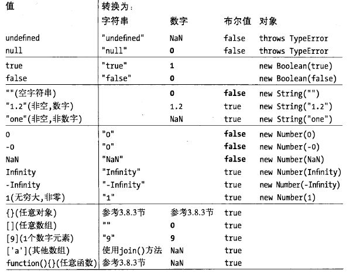

字符串(string)是由一组16位值组成的不可变的有序序列。JavaScript中并没有表示单个字符的"字符型"
例如"aaa",'name="aaa"','lalala',另外字符串也可以拆分成数行来写，后面跟上"\"，再另起一行即可。如果在字符串中进行真实的换行，需要使用"\n"
这里介绍几个常用的转义字符：
\n换行 \t制表 \oNULL \v垂直制表 \b退格符 \f换页符 \r回车符
字符串的常用属性和方法:length,indexOf(),lastIndexOf(),substring(start,end),charAt(),split(),slice(),replace(),toUpperCase()
JavaScript定义了RegExp()构造函数，用来创建表示文本匹配模式的对象。例如var patter=/\d+/g;
null表示一个特殊值，描述"空值",对null执行typeof运算，返回"object"。
undefined是更深层次的"空值",对undefined执行typeof运算，返回"undefined"。
全局对象的属性是全局定义的符号，JavaScript程序可以直接使用。
var global=this;
JavaScript对象是一种复合值：它是属性或已命名值的集合。通过"."符号来引用属性值。
对于String,Number和Boolean值来说，在使用其直接量的方法或属性值，会将其包装成一个相应的临时对象来进行调用(和Java中的包装类相像)。
JavaScript中的原始值（undefined，null，布尔值，数字和字符串）与对象（包括数组和函数）有着根本的区别。
原始值在比较时是进行值的比较，对象在比较时比较的是其引用。
JavaScript中的取值非常灵活，可以根据需要自行转换类型。

JavaScript中"=="随相等的含义灵活多变。例如：
null==undefined //这两个值相等
"0"==0 //在比较前字符串转换成数字
0==false //在比较前布尔值转换成数字
"0" == false //在比较前字符串和布尔值都转换成数字
注意：一个值转换成另一个值并不意味着两个值是相等的，例如在if()中undefined会被转换成false，
但undefined!=false。
JavaScript中做显示转换最简单的方法是使用Boolean(),Number(),String()和Object()函数。
对象到布尔值的转换非常简单:所有的对象（包括数组和函数）都转换为true。
对象到字符串和对象到数字的转换是通过调用待转换对象的一个方法来完成的。JavaScript的对象
继承了两个转换方法，第一个是toString(),第二个是valueOf()
JavaScript对象到字符串的转换过程
JavaScript使用var关键字对变量进行声明，如果没有使用var进行声明，这个变量会被认为是全局变量。
JavaScript没有块级作用域,函数作用域有一个特性，局部变量在整个函数体内都是有定义的，不论他定义的位置。实例
当声明一个全局变量时，实际上是定义了全局对象的一个属性。当通过var声明一个变量时，创建的这个属性是不可配置的（无法通过delete删除）。如果一个给一个未声明的变量赋值的话，JavaScript会自动创建一个全局变量。